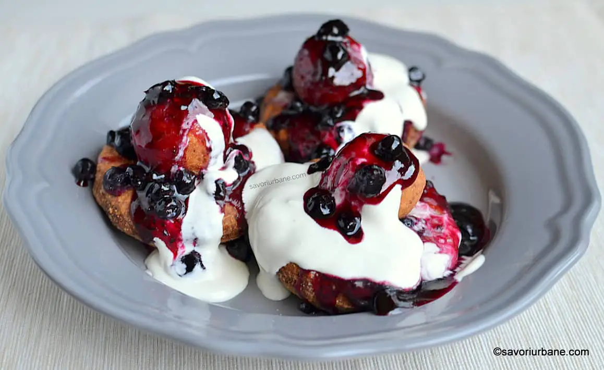

Papanasi

Descriere
Papanasii cu care am crescut noi (in Ardeal si Banat) sunt cei fierti, din branza de vaci amestecata cu gris, oua si coaja de lamaie. Dupa fierbere se tavalesc prin pesmet rumenit in unt si se presara cu zahar pudra vanilat, cu sau fara scortisoara. Si ei se servesc traditional cu smantana.
Ingrediente
- 400 g branza de vaci grasa si bine scursa de zer
- 300 g faina
- 1/2 plic praf de copt (1 lingurita rasa)
- 2 oua
- un praf de sare
- 1 plic zahar vanilat
- coaja rasa de la o lamaie
- 500 ml ulei pentru prajit
- smantana fermentata (acrisoara)
- dulceata la alegere
- zahar pudra vanilat
Mod de preparare
- Într-un bol, amestecă brânza de vaci cu ouăle, zahărul, zahărul vanilat, sarea și coaja rasă de lămâie.
- Adaugă treptat făina și praful de copt, amestecând continuu până când obții un aluat omogen.
- Formează papanași cu mâinile umede, de mărimea unei mingi de ping-pong.
- Încinge uleiul într-o tigaie adâncă.
- Prăjește papanașii pe ambele părți, până când se rumenesc frumos.
- Servește papanașii calzi, cu smântână și dulceață.
Inapoi la cuprins